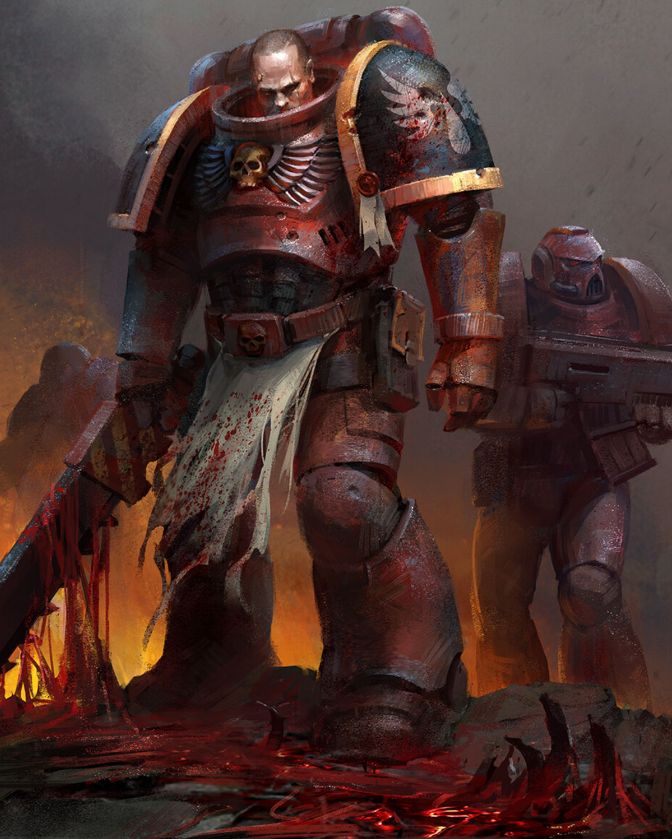

Dossier Astartes IXe Légion
Les Blood Angels furent la IXe Légion. Une armée née pour incarner la beauté martiale, la discipline et la fureur contenue.
Sous leur éclat rouge et or se cache pourtant une vérité plus sombre. Leur noblesse n’a jamais effacé la violence qui dort dans leur sang.

LES PREMIERS ÂGES
Leur Primarque, Sanguinius, fut retrouvé sur Baal, un monde irradié, sec, brutal, où la survie elle-même était une guerre quotidienne.
Lorsque Sanguinius prit le commandement de la IXe Légion, il transforma ses fils. Ce qui n’était qu’une force redoutée devint un chapitre d’une noblesse presque irréelle.
Durant la Grande Croisade, les Blood Angels gagnèrent une réputation de guerriers magnifiques et terrifiants. Leur grâce au combat cachait une brutalité absolue.
Puis vint l’Hérésie d’Horus.
L’UNITÉ PAR LE FER
Au siège de Terra, Sanguinius affronta Horus et fut tué. Sa mort ne disparut pas avec lui. Elle resta gravée dans le sang de ses fils.
Depuis ce jour, les Blood Angels portent deux malédictions. La Soif Rouge. Et la Rage Noire.
La Soif Rouge est une pulsion intérieure. Une faim de sang, de violence et de proximité avec la mort. Elle peut être contenue, mais jamais supprimée.
La Rage Noire est plus terrible encore. Ceux qui y succombent revivent les derniers instants de Sanguinius face à Horus. Ils ne voient plus le champ de bataille. Ils voient la trahison.
L’HÉRITAGE DU TRÔNE
Ces guerriers sont alors condamnés. Utilisés une dernière fois dans la Compagnie de la Mort, ils deviennent des armes de rage pure avant d’être perdus définitivement.
Il faut comprendre ceci. Les Blood Angels ne luttent pas seulement contre les ennemis de l’Imperium.
Ils luttent contre leur propre sang.
Chaque victoire est aussi une résistance. Chaque bataille gagnée est une preuve que la bête intérieure n’a pas encore pris le dessus.
Fin de l’extrait. Toute manifestation prolongée de la Rage Noire doit être signalée aux autorités du Chapitre.